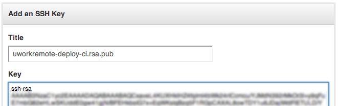
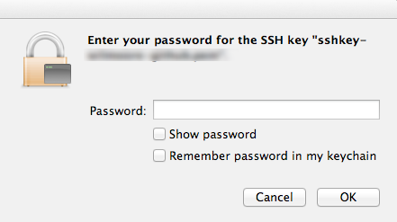
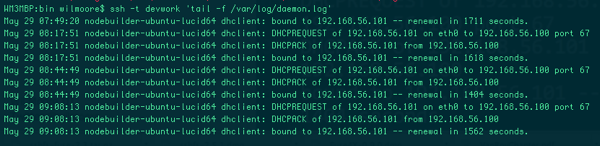
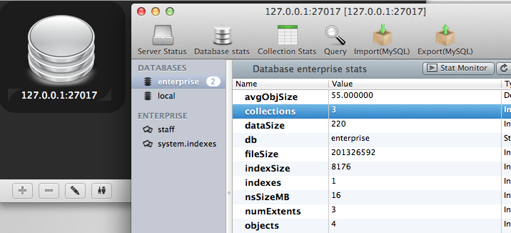
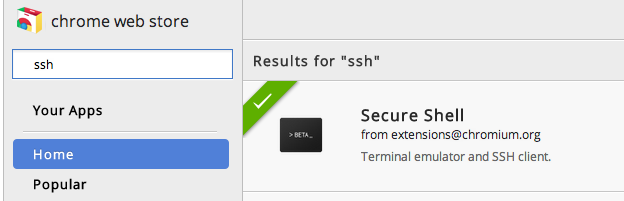
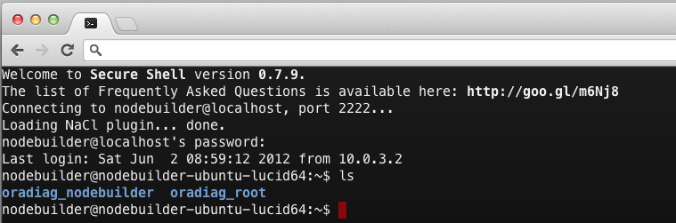

Senior Developer @ Net-Results Marketing Automation
http://net-results.com
Golden / Lakewood
Create multiple key pairs -- No more $HOME/.ssh/id_rsa
ssh-keygen -t rsa \
-C "{USER}@{APP} ({ENV})" \
-f ~/.ssh/app-user-env.rsa
Don't share across networks
ssh-keygen -t rsa \
-C "deploy@uworkremote (ci)" \
-f ~/.ssh/uworkremote-deploy-ci.rsa
Never share your "Private Key"
~/.ssh/uworkremote-deploy-ci.rsa
Do share your "Public Key" with hosts you trust
~/.ssh/uworkremote-deploy-ci.rsa.pub
Remote login: You'll be asked for your passphrase
% ssh user@host -i \
~/.ssh/uworkremote-deploy-ci.rsa
Copy...Paste
Github Oauth2 API
% curl -i
-H "Authorization: token ${token}" \
-d '{"title": "${key-name}", \
"key" : "ssh-rsa ..."}' \
https://api.github.com/user/keys
Mac Keychain
Set and Forget
% ssh-add -K \
$HOME/.ssh/uworkremote-deploy-ci.rsa
Change your private-key's pass-phrase
% ssh-keygen -p -f \
$HOME/.ssh/uworkremote-deploy-ci.rsa
Enter old passphrase:
Enter new passphrase:
Enter same passphrase again:
Your new passphrase has been saved...
Multiple Single-Use Keys
You'll hate doing this:
% ssh deploy@192.168.56.101 -p 3333...
% $EDITOR $HOME/.ssh/config
Host some-remote-host
Hostname 192.168.56.101
User deploy
Port 3333
IdentityFile ~/.ssh/{keyname}.rsa
You'll ♥ doing this:
% ssh some-remote-host
Remove stale known_hosts entries
% ssh-keygen -R 192.168.56.101
Hostname Auto-Completion
Type a few characters...press tab
% ssh ec2
List filtered based on input before pressing <TAB>
ec2-184-72-73-71.compute-1.amazonaws.com
ec2-184-72-73-72.compute-1.amazonaws.com
ec2-184-72-73-73.compute-1.amazonaws.com
Type a path prefix...<tab>
% scp devwork:/usr/local/k
The `kestrel` directory is expanded...<tab> again
% scp devwork:/usr/local/kestrel/
Directory contents are expanded
/usr/local/kestrel/config/
/usr/local/kestrel/scripts/
/usr/local/kestrel/kestrel-2.1.4.jar
/usr/local/kestrel/libs/
You probably already have it installed
% complete | grep [s]sh
complete -F _ssh ssh
complete -F _ssh_copy_id ssh-copy-id
complete -o nospace -F _sshfs sshfs
complete -F _known_hosts ssh-installkeys
complete -F _ssh autossh
complete -F _ssh slogin
If not, install it (if you have ZSH, skip this)
${YOUR_PACKAGER} install bash-completion
Source it in
% source /opt/local/etc/bash_completion
The homebrew version
% source \
$(brew --prefix)/etc/bash_completion
SSHFS
Mount
% mkdir -p /tmp/devwww
% sshfs devwork:/var/www /tmp/devwww \
-oreconnect,allow_other,volname=devwww
Unmount
% umount /tmp/devwww
Thousands of files?
% ls -1
% find . -maxdepth 1
Remote Commands
Tailing a remote logfile
% ssh -t devwork \
'tail -f /var/log/daemon.log'

Access Remote Resources Locally
% ssh -NCL 27017:127.0.0.1:27017 devwork

Named Remote Screen Sessions
Create or continue an admin session
% ssh -t devwork \
'screen -xRRS admin-mongo'
Again in another window (x3)
% ssh -t devwork \
'screen -xRRS admin-mongo'
Four node pair programming session via SSH + GNU Screen
Module = Pair
Class = Programming
Method = fun (should output a string)
Tunnel browser traffic through an SSH server
Setup the SOCKS server
% ssh -fNTD 9999 devwork
Tell Google Chrome about our SOCKS server
% export SOCKS_SERVER=localhost:9999
Chrome SSH Client

